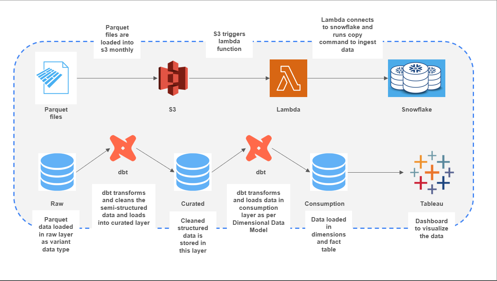
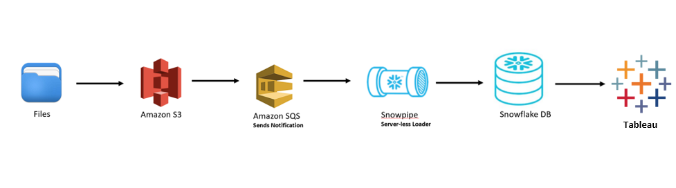
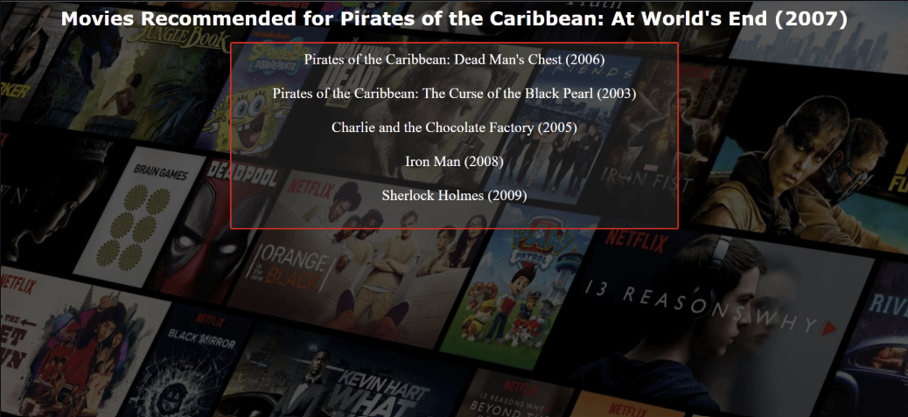
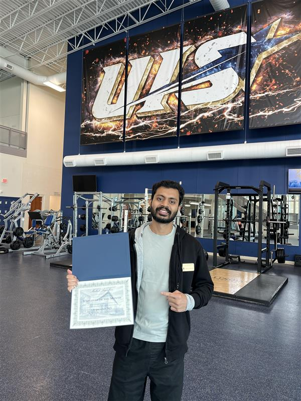
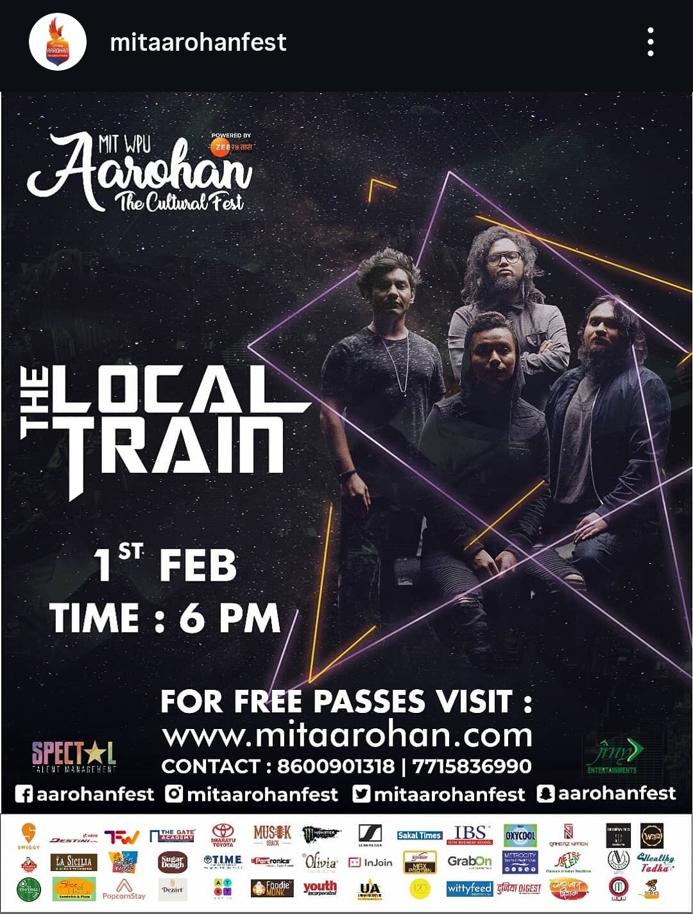
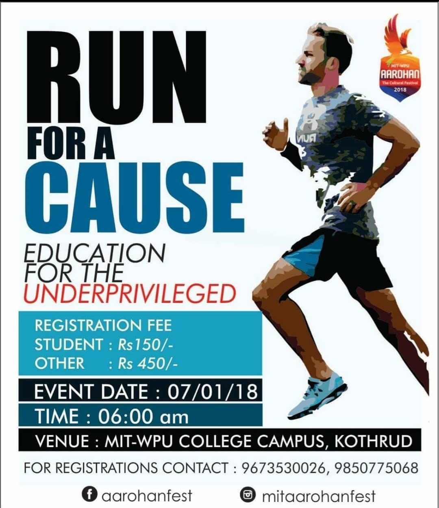

Mukul Sagvekar
Data Engineer
I specialize in developing and maintaining scalable, reliable, and high-performance data pipelines, ETL/ELT jobs, designing cloud data warehousing solutions to deliver business insights and drive data-driven decision-making.
Download Resume (PDF)About Me
I have 4 years of experience working as a data engineer. My expertise covers the full data lifecycle, from designing data models, strategy to ingest and transform data efficiently, optimizing complex data systems, building Slowly Changing Dimensions Type 2 (SCD Type 2) data pipeline to enable accurate historical reporting.
Data Projects

NYC Taxi Data Analysis
STACK: AWS Lambda, AWS S3, Snowflake, dbt, Tableau, SQL, Python.
Architected a snowflake schema data model and built end-to-end data pipeline to analyze 3.1M NYC Taxi trips, delivering dashboards for trip demand forecasting and fare insights.
View Repository → View Dashboard →
Trending Youtube Video Statistics
STACK: AWS, Snowflake, Tableau, SQL.
Crafted a data pipeline to process 13 years data using AWS and Snowflake, with data visualization in Tableau.
View Repository → View Dashboard →
Movie Recommendation System
STACK: Python, Pandas, Numpy, Unsupervised Learning, Collaborative Filtering.
Engineered a movie recommendation system using collaborative filtering with KNN algorithm and cosine similarity.
View Dashboard →Professional Experience
Aug 2023 — Dec 2024
Data Engineer
Happiest Minds, India
Worked on large-scale data engineering projects across retail and digital engagement domains. Designed normalized and dimensional data models for advanced analytics and reporting. Built and maintained ELT pipelines integrating data from 8+ sources. Developed serverless, near real-time pipelines for traffic and engagement data, improving insights and automated customer journey reports.
Jan 2021 — Aug 2023
Data Engineering Analyst
Accenture, India
As a data engineer, successfully led migration from AWS to Snowflake. Designed, developed and maintained scalable data pipelines using Jenkins, AWS services and Snowflake following best practices. Collaborated with cross-functional teams to develop a POC. Following Agile methodology for development.
Extra-Curricular Activities And Community Impact

Facility Lead At Campus Recreation Center
Apr 2025 - Present
Oversaw the daily operations of the recreation center, assisted students, faculty, and staff with inquiries regarding the center, managing bookings for events.

2025 UIS Prairie Stars 5K
Sept 2025
Completed the 5K with a personal best time of 26.27 minutes, achieving 3rd position in my age category, demonstrating my commitment, discipline, and ability to push boundaries.

MITWPU Aarohan Cultural Fest
Feb 2019
Organized and coordinated the college cultural festival - MITWPU Aarohan. As a part of core organizing members, lead the sponsorship and publicity team.

MITWPU Run For A Cause Marathon
Jan 2018
Organized and coordinated Run for a Cause Marathon, which witnessed more than 700 participants.
Contact & Connect
I'm currently seeking challenging Data Engineering roles. Let's connect to discuss how I can contribute to your data infrastructure goals.